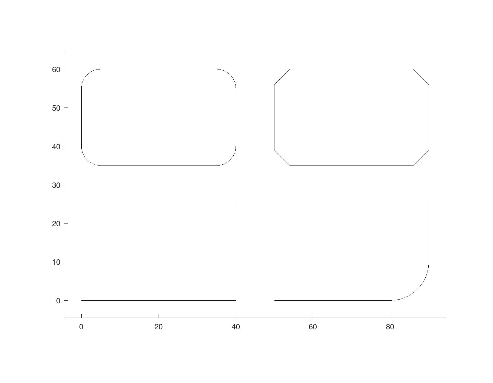
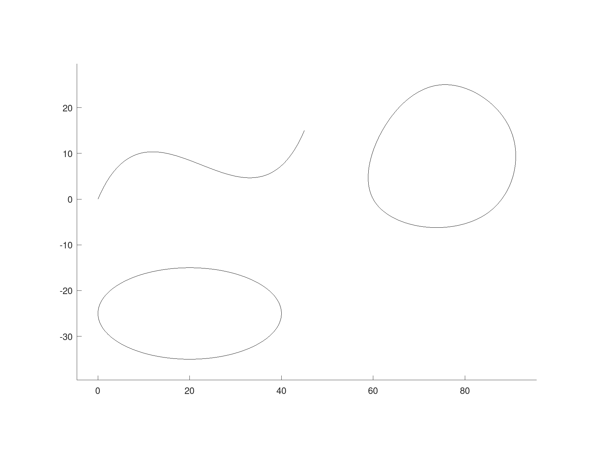
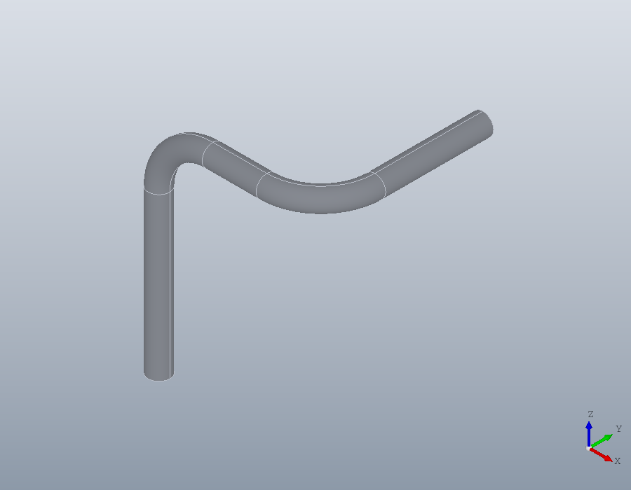
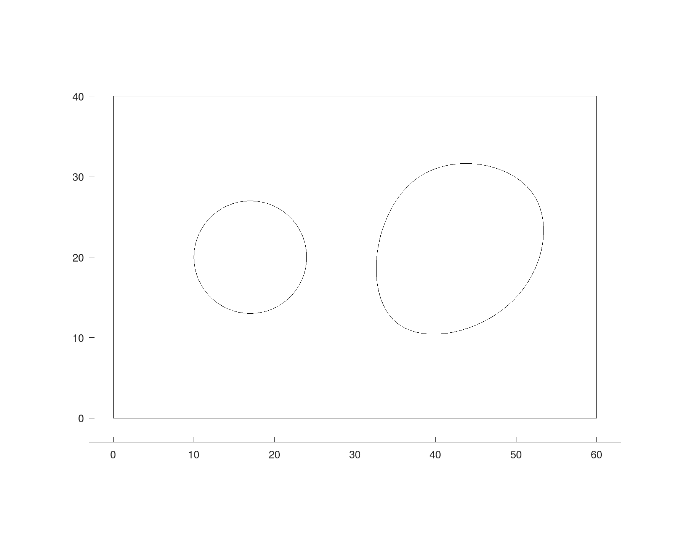

Outlines: polylines, splines, paths and regions
The four classes every shape in the package is drawn with: a polyline of lines and arcs, a smooth spline, a path that runs through space, and a region, the flat area a solid is made from.
Polylines
A geom.Polyline is made from its vertices, one row each. Two columns give straight segments; it is open unless 'Closed' joins the last vertex back to the first.
L = geom.Polyline ([0, 0; 40, 0; 40, 25])
T = geom.Polyline ([0, 0; 40, 0; 40, 25], 'Closed', true)L =
geom.Polyline: open, 3 vertices, 0 arcs
T =
geom.Polyline: closed, 3 vertices, 0 arcsA third column is the bulge of the segment leaving each vertex: 0 for a straight segment, 1 for a half circle running anticlockwise, -1 for one running clockwise. In between, a bulge is the tangent of a quarter of the angle the arc turns through, so tand (90 / 4) is a quarter circle.
A = geom.Polyline ([50, 0, 0; 80, 0, tand(90 / 4); 90, 10, 0; 90, 25, 0])A =
geom.Polyline: open, 4 vertices, 1 arcfillet rounds the corners where two straight segments meet, and chamfer cuts them. Each turns a corner vertex into two, joined by an arc or a straight cut.
F = fillet (geom.Polyline ([0, 35; 40, 35; 40, 60; 0, 60], 'Closed', true), 5)
C = chamfer (geom.Polyline ([50, 35; 90, 35; 90, 60; 50, 60], ...
'Closed', true), 4)F =
geom.Polyline: closed, 8 vertices, 4 arcs
C =
geom.Polyline: closed, 8 vertices, 0 arcsA draw.Drawing holds them for plotting, each appended by its polyline method.
D = draw.Drawing ();
D = D.polyline (L);
D = D.polyline (A);
D = D.polyline (F);
D = D.polyline (C);
plot (D);
Splines
A geom.Spline drawn through points is a smooth cubic curve that passes through every one of them. It keeps the points, as DXF does, and its length is measured along the curve.
SP = geom.Spline ([0, 0; 15, 10; 30, 5; 45, 15])
length (SP)SP =
geom.Spline: open, degree 3, 6 control points, through 4 points
ans = 55.702With 'Closed' the curve runs on from the last point back to the first, smooth all round. geom.Spline.ellipse is an ellipse, exactly rather than as a curve close to one, and a circle when its two semi-axes are equal; this one is centred at (20, -25).
blob = geom.Spline ([60, 0; 85, -3; 90, 15; 75, 25; 62, 15], 'Closed', true);
E = geom.Spline.ellipse (20, 10, 'UCS', geom.UCS ([0, 0, 1], [20, -25, 0]))
length (E)E =
geom.Spline: closed, rational, degree 2, 9 control points
ans = 96.884A spline can also be given by its control points, its knots and, for a rational curve, its weights, with geom.Spline.nurbs. This is a quarter circle of radius 10, whose length is a quarter of 20 times pi.
Q = geom.Spline.nurbs ([10, 0; 10, 10; 0, 10], [0, 0, 0, 1, 1, 1], ...
[1; sqrt(2) / 2; 1]);
length (Q)
D = draw.Drawing ();
D = D.spline (SP);
D = D.spline (blob);
D = D.spline (E);
plot (D);ans = 15.708
Paths
A geom.Path is a route through space rather than a shape in a plane: a chain of straight segments, arcs and splines in three dimensions, along which a section is swept. Made from points, it has straight segments and sharp corners; fillet bends each corner round an arc, as a tube is bent.
P = geom.Path ([0, 0, 0; 0, 0, 40; 30, 0, 40; 30, 30, 40]);
length (P)
P = fillet (P, 10)
length (P)ans = 100
P =
geom.Path: open, 5 segments, 2 arcs, 0 splines
ans = 91.416join puts paths and splines end to end, each starting where the last ended. geom.Path.arc is an arc through three points. A hairpin, up, over and down:
H = join (geom.Path ([0, 0, 0; 0, 0, 50]), ...
geom.Path.arc ([0, 0, 50], [10, 0, 60], [20, 0, 50]), ...
geom.Path ([20, 0, 50; 20, 0, 0]))H =
geom.Path: open, 3 segments, 1 arc, 0 splinesA path is seen best as what it is for. solid.sweep carries a small disc along it, which makes the bent route above a rod.
rod = solid.sweep (geom.Region ([-2, 0, 1; 2, 0, 1]), P);
show (rod);
Regions
A geom.Region is a flat area: one closed outline, and any number of holes inside it given as a cell array. The outline and each hole may be a closed polyline, path or spline, or the matrix a polyline is made from.
hole = geom.Spline ([35, 12; 50, 15; 52, 28; 38, 30], 'Closed', true);
R = geom.Region ([0, 0; 60, 0; 60, 40; 0, 40], {[10, 20, 1; 24, 20, 1], hole})
plot (draw.Drawing ().region (R));R =
geom.Region: an outline of 4 segments, 2 holes
A region is checked when it is made, and one that cannot be a solid's face is refused with the reason. A hole that reaches past the outline:
try
geom.Region ([0, 0; 60, 0; 60, 40; 0, 40], {[50, 20, 1; 70, 20, 1]});
catch err
disp (err.message);
end_try_catchgeom.Region: HOLES{1} must lie strictly inside OUTLINE.and an outline that crosses itself:
try
geom.Region ([0, 0; 40, 30; 40, 0; 0, 30]);
catch err
disp (err.message);
end_try_catchgeom.Region: OUTLINE must not cross or touch itself.The direction an outline is drawn in does not matter. A region keeps its outline anticlockwise and its holes clockwise, whichever way they were given, so this rectangle drawn clockwise still has a positive area.
Rc = geom.Region ([0, 0; 0, 40; 60, 40; 60, 0]);
geom.signedarea (Rc.Outline.Vertices(:,1:2))ans = 2400